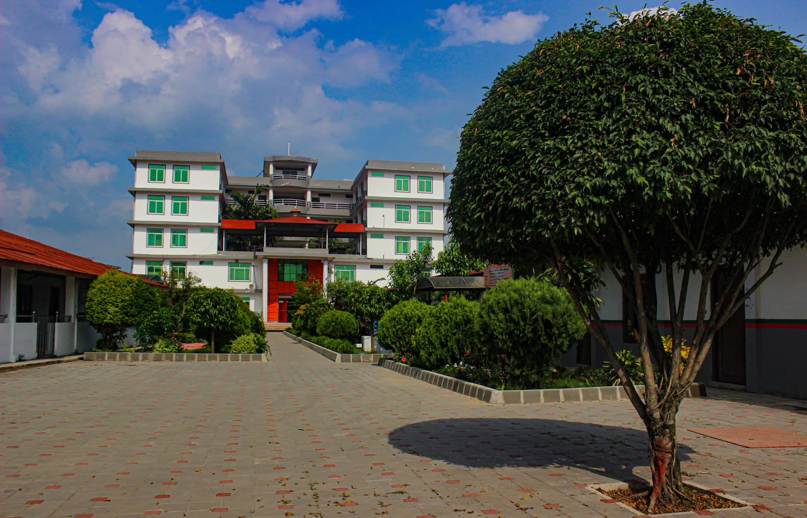

<!DOCTYPE html>
<html lang="en">

<head>
    <meta charset="UTF-8" />
    <meta http-equiv="X-UA-Compatible" content="IE=edge" />
    <meta name="viewport" content="width=device-width, initial-scale=1.0" />
    <title>Test</title>
    <script src="https://cdn.tailwindcss.com"></script>
</head>

<body class="p-0 m-0">
    <main class="bg-[#14131A] w-full h-[140vh] md:h-[100vh]">
        <aside class="hidden lg:flex h-screen fixed w-screen sm:w-[300px] z-30">
            <div class="toggle flex flex-col lg:m-5 w-full">
                <div class="hidden lg:flex gap-2 p-5 pt-0">
                    <div class="h-4 w-4 bg-[#2BD576] rounded-full"></div>
                    <div class="h-4 w-4 bg-red-500 rounded-full"></div>
                </div>
                <div
                    class="flex mt-4 relative flex-col h-full p-5 bg-cardPrimary text-[#8B8A91] rounded-lg w-full overflow-y-auto pb-20 md:pb-5">
                    <div class="block lg:hidden p-5 z-10 text-primary absolute right-0 top-0 cursor-pointer text-2xl">
                        <svg xmlns="http://www.w3.org/2000/svg" width="24" height="24" viewBox="0 0 24 24" fill="none"
                            stroke="#8B8A91" stroke-width="2" stroke-linecap="round" stroke-linejoin="round"
                            class="text-primary">
                            <path d="M18 6 6 18"></path>
                            <path d="m6 6 12 12"></path>
                        </svg>
                    </div>
                    <a class="flex bg-transparent items-center placeholder:text-info transform transition-transform duration-300 hover:-translate-y-1 text-sm gap-4 p-4"
                        href="/"><svg xmlns="http://www.w3.org/2000/svg" width="24" height="24" viewBox="0 0 24 24"
                            fill="none" stroke="#8B8A91" stroke-width="2" stroke-linecap="round" stroke-linejoin="round"
                            class="lucide lucide-home">
                            <path d="m3 9 9-7 9 7v11a2 2 0 0 1-2 2H5a2 2 0 0 1-2-2z"></path>
                            <polyline points="9 22 9 12 15 12 15 22"></polyline>
                        </svg>
                        Home</a><a
                        class="flex bg-transparent items-center placeholder:text-info transform transition-transform duration-300 hover:-translate-y-1 text-sm gap-4 p-4"
                        href="/"><svg xmlns="http://www.w3.org/2000/svg" width="24" height="24" viewBox="0 0 24 24"
                            fill="none" stroke="#8B8A91" stroke-width="2" stroke-linecap="round" stroke-linejoin="round"
                            class="lucide lucide-flame">
                            <path
                                d="M8.5 14.5A2.5 2.5 0 0 0 11 12c0-1.38-.5-2-1-3-1.072-2.143-.224-4.054 2-6 .5 2.5 2 4.9 4 6.5 2 1.6 3 3.5 3 5.5a7 7 0 1 1-14 0c0-1.153.433-2.294 1-3a2.5 2.5 0 0 0 2.5 2.5z">
                            </path>
                        </svg>
                        Trending</a><a
                        class="flex bg-transparent items-center placeholder:text-info transform transition-transform duration-300 hover:-translate-y-1 text-sm gap-4 p-4"
                        href="/"><svg xmlns="http://www.w3.org/2000/svg" width="24" height="24" viewBox="0 0 24 24"
                            fill="none" stroke="#8B8A91" stroke-width="2" stroke-linecap="round" stroke-linejoin="round"
                            class="lucide lucide-code">
                            <polyline points="16 18 22 12 16 6"></polyline>
                            <polyline points="8 6 2 12 8 18"></polyline>
                        </svg>
                        Snippets</a><a
                        class="flex bg-transparent items-center placeholder:text-info transform transition-transform duration-300 hover:-translate-y-1 text-sm gap-4 p-4"
                        href="#"><svg xmlns="http://www.w3.org/2000/svg" width="24"
                            height="24" viewBox="0 0 24 24" fill="none" stroke="#8B8A91" stroke-width="2"
                            stroke-linecap="round" stroke-linejoin="round" class="lucide lucide-video">
                            <path d="m22 8-6 4 6 4V8Z"></path>
                            <rect width="14" height="12" x="2" y="6" rx="2" ry="2"></rect>
                        </svg>
                        Blogs</a>
            </div>
        </aside>
        <div class="flex-1 pl-0 lg:pl-[300px]">
            <nav class="flex sticky shadow-md top-0 z-20 bg-body p-5 text-info justify-between">
                <div></div>
                <div class="flex items-center gap-5">
                        <div class="flex">
                            <a target="_blank"
                            class="flex bg-transparent items-center placeholder:text-info transform transition-transform duration-300 hover:-translate-y-1 text-sm gap-4 p-4"
                            href="#"><svg xmlns="http://www.w3.org/2000/svg" width="20"
                                height="20" viewBox="0 0 24 24" fill="none" stroke="#b5179e" stroke-width="2"
                                stroke-linecap="round" stroke-linejoin="round" >
                                <rect width="20" height="20" x="2" y="2" rx="5" ry="5"></rect>
                                <path d="M16 11.37A4 4 0 1 1 12.63 8 4 4 0 0 1 16 11.37z"></path>
                                <line x1="17.5" x2="17.51" y1="6.5" y2="6.5"></line>
                            </svg>
                            </a><a target="_blank"
                            class="flex bg-transparent items-center placeholder:text-info transform transition-transform duration-300 hover:-translate-y-1 text-sm gap-4 p-4"
                            href="#"><svg xmlns="http://www.w3.org/2000/svg" width="20"
                                height="20" viewBox="0 0 24 24" fill="none" stroke="#2a9d8f" stroke-width="2"
                                stroke-linecap="round" stroke-linejoin="round" >
                                <path
                                    d="M15 22v-4a4.8 4.8 0 0 0-1-3.5c3 0 6-2 6-5.5.08-1.25-.27-2.48-1-3.5.28-1.15.28-2.35 0-3.5 0 0-1 0-3 1.5-2.64-.5-5.36-.5-8 0C6 2 5 2 5 2c-.3 1.15-.3 2.35 0 3.5A5.403 5.403 0 0 0 4 9c0 3.5 3 5.5 6 5.5-.39.49-.68 1.05-.85 1.65-.17.6-.22 1.23-.15 1.85v4">
                                </path>
                                <path d="M9 18c-4.51 2-5-2-7-2"></path>
                            </svg>
                            </a><a target="_blank"
                            class="flex bg-transparent items-center placeholder:text-info transform transition-transform duration-300 hover:-translate-y-1 text-sm gap-4 p-4"
                            href="#"><svg xmlns="http://www.w3.org/2000/svg" width="20"
                                height="20" viewBox="0 0 24 24" fill="none" stroke="#0277b5" stroke-width="2"
                                stroke-linecap="round" stroke-linejoin="round">
                                <path d="M16 8a6 6 0 0 1 6 6v7h-4v-7a2 2 0 0 0-2-2 2 2 0 0 0-2 2v7h-4v-7a6 6 0 0 1 6-6z">
                                </path>
                                <rect width="4" height="12" x="2" y="9"></rect>
                                <circle cx="4" cy="4" r="2"></circle>
                            </svg>
                            </a>
                        </div><button type="button">
                        <svg xmlns="http://www.w3.org/2000/svg" width="24" height="24" viewBox="0 0 24 24" fill="none"
                            stroke="#8B8A91" stroke-width="2" stroke-linecap="round" stroke-linejoin="round"
                            class="flex lg:hidden cursor-pointer hover:text-primary transition-colors">
                            <line x1="4" x2="20" y1="12" y2="12"></line>
                            <line x1="4" x2="20" y1="6" y2="6"></line>
                            <line x1="4" x2="20" y1="18" y2="18"></line>
                        </svg>
                    </button>
                </div>
            </nav>
            <div class="px-4 md:pr-4 blur-wala-section">
                <div class="flex rounded-lg w-full  bg-[url('https://images.pexels.com/photos/3607083/pexels-photo-3607083.jpeg?auto=compress&cs=tinysrgb&w=1260&h=750&dpr=1')] bg-no-repeat bg-cover">
                    <div
                        class="flex justify-center md:rounded-ld overflow-hidden md:px-10 py-5 bg-blur backdrop-filter backdrop-blur-md w-full gap-2 md:gap-10">
                        <div class="main"></div>
                        <div class="flex md:flex-1 flex-col justify-center gap-4">
                            <div class="flex justify-between items-center gap-5">
                                <div class="text-3xl flex flex-col font-bold text-[#14131A]">Sanket Subedi<div
                                        class="text-sm font-thin flex justify-between items-center">@itsmesanketsubedi<a
                                            class="block md:hidden" target="_blank"
                                            href="#"><button
                                                class="h-max w-max flex gap-2 justify-center items-center rounded-md outline-0 active:scale-95 active:shadow-inner disabled:opacity-50 disabled:pointer-events-none disbaled:cursor-not-allowed bg-[#14131A] text-[#8B8A91] font-semibold text-xs p-2"><svg
                                                    xmlns="http://www.w3.org/2000/svg" width="24" height="24"
                                                    viewBox="0 0 24 24" fill="none" stroke="currentColor"
                                                    stroke-width="2" stroke-linecap="round" stroke-linejoin="round"
                                                    >
                                                    <rect width="20" height="20" x="2" y="2" rx="5" ry="5"></rect>
                                                    <path d="M16 11.37A4 4 0 1 1 12.63 8 4 4 0 0 1 16 11.37z"></path>
                                                    <line x1="17.5" x2="17.51" y1="6.5" y2="6.5"></line>
                                                </svg></button></a></div>
                                </div>
                                <a class="hidden md:block" target="_blank" href="#"><button
                                        class="h-max w-max flex gap-2 justify-center items-center rounded-md outline-0 active:scale-95 active:shadow-inner disabled:opacity-50 disabled:pointer-events-none disbaled:cursor-not-allowed bg-[#14131A] text-[#8B8A91] font-semibold text-xs py-2 px-4"><svg
                                            xmlns="http://www.w3.org/2000/svg" width="24" height="24"
                                            viewBox="0 0 24 24" fill="none" stroke="currentColor" stroke-width="2"
                                            stroke-linecap="round" stroke-linejoin="round"
                                            >
                                            <rect width="20" height="20" x="2" y="2" rx="5" ry="5"></rect>
                                            <path d="M16 11.37A4 4 0 1 1 12.63 8 4 4 0 0 1 16 11.37z"></path>
                                            <line x1="17.5" x2="17.51" y1="6.5" y2="6.5"></line>
                                        </svg><span>Follow me on Instagram</span></button></a>
                            </div>
                        </div>
                    </div>
                </div>
            </div>
            <section class="flex md:flex-row flex-col h-[100vh] space-y-3 md:h-[50vh] mt-6 mx-4 md:space-y-0 md:space-x-3">
                <a class="first  w-full md:w-1/3  rounded-lg flex justify-center hover:cursor-pointer" href="#">
                    
                    <div class="absolute text-center mt-24 text-[#fffff2]">
                        <h1 class="text-3xl font-bold">United Technical College</h1>
                        <h1 class="text-2xl font-semibold">Page Clone</h1>
                    </div>
                </a>
                <a class="first  w-full md:w-1/3  rounded-lg flex justify-center hover:cursor-pointer" href="#">
                    
                    <div class="absolute text-center mt-24 text-[#fffff2]">
                        <h1 class="text-3xl font-bold">United Technical College</h1>
                        <h1 class="text-2xl font-semibold">Page Clone</h1>
                    </div>
                </a>
                <a class="first  w-full md:w-1/3  rounded-lg flex justify-center hover:cursor-pointer" href="#">
                    
                    <div class="absolute text-center mt-24 text-[#fffff2]">
                        <h1 class="text-3xl font-bold">United Technical College</h1>
                        <h1 class="text-2xl font-semibold">Page Clone</h1>
                    </div>
                </a>
            </section>
            <footer class=" w-full h-[3vh] p-4">
                <p class="text-md font-semibold text-[#8B8A91] ">Copyright © 2023 - Sanket Subedi</p>
            </footer>
        </div>
    </main>
</body>

</html>